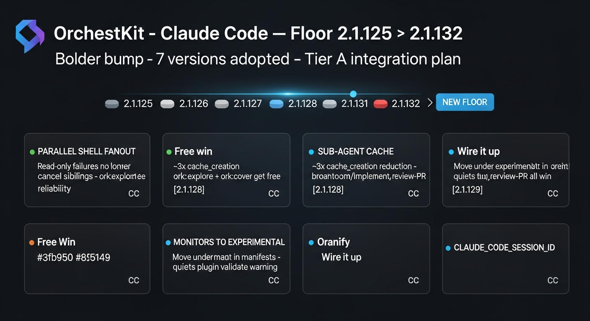

Tightens OrchestKit's support window from latest + 3 minors to latest only via a 12-week manual_override. Recorded in shared/cc-support.json; auto-bump policy resumes after expires.

| File | Change |
|---|---|
shared/cc-support.json | latest, supported_floor, drop_after → 2.1.132 · adds manual_override with 2026-08-07 expiry |
src/hooks/src/lib/cc-version-matrix.ts | MIN_CC_VERSION → 2.1.132 (stamper) · 20 new feature entries (3 supplemental 2.1.128, 9 new 2.1.129, 8 new 2.1.132) |
CLAUDE.md | Version section CC floor → 2.1.132 (stamper) |
src/skills/doctor/references/version-compatibility.md | Overview line → 2.1.132 (stamper) |
tests/fixtures/cc-changelogs/synthetic.md | Adds 2.1.132 + 2.1.133 sections so cc-release-watch test stays valid |
tests/integration/test-cc-release-watch.sh | Pins recovery test to jq -r .latest cc-support.json for resilience to future bumps |
src/hooks/src/__tests__/lib/cc-version-matrix.test.ts | Counts updated: 372 → 392, missing-from-X bumped by 20 |
src/hooks/src/__tests__/lifecycle/cc-version-check.test.ts | "matrix latest" probe → 2.1.132 |
plugins/ork/... + docs/site/... | Auto-generated by npm run build from src/ |
{
"latest": "2.1.132",
"supported_floor": "2.1.132",
"drop_after": "2.1.131",
"manual_override": {
"reason": "Bolder bump per 2026-05-07 decision — gates on
CLAUDE_CODE_SESSION_ID (2.1.132) so hook utilities can correlate
Bash subprocesses to the parent session without minting their own
UUIDs, plus the parallel-shell-fanout fix and ~3x sub-agent
prompt-cache reduction (both 2.1.128). Tightens the support
window vs. the 'latest + 3' policy for ~12 weeks; auto-bump
policy resumes after expires.",
"expires": "2026-08-07"
}
}
The auto-bump workflow (cc-support-window-bump.yml) honors unexpired manual_override blocks and opens an info-only PR instead of forcing a policy floor recompute.
A failing read-only command (grep, git diff, ls) no longer cancels sibling parallel tool calls. Every fan-out skill — ork:explore, ork:cover, ork:review-pr — gets reliability with no code change.
Sub-agent progress summaries hit the prompt cache. ~3× reduction in cache_creation. Compounds across ork:brainstorm + ork:implement + ork:review-pr fan-outs.
Bash subprocesses now inherit the same session_id passed to hooks. Hook utilities can read this env var directly instead of minting UUIDs — unifies analytics traces.
Plugin manifests should declare monitors under experimental: { ... }. Top-level still works but claude plugin validate warns. OrchestKit hits this directly.
Worktree branches now created from local HEAD instead of origin/main. Behavior change. Onboarding docs that describe worktree creation need updating.
User-side off / user-invocable-only / name-only setting. Pairs with our disable-model-invocation: true skills. Document in CLAUDE.md.
Anyone running CC 2.1.131 or earlier sees the doctor warning Claude Code X.Y.Z is below OrchestKit's supported floor (2.1.132). Hooks that depend on CLAUDE_CODE_SESSION_ID would no-op gracefully (they fall back to UUID minting). The 12-week window means auto-bump catches up by mid-August, restoring the standard latest + 3 policy without further manual intent.